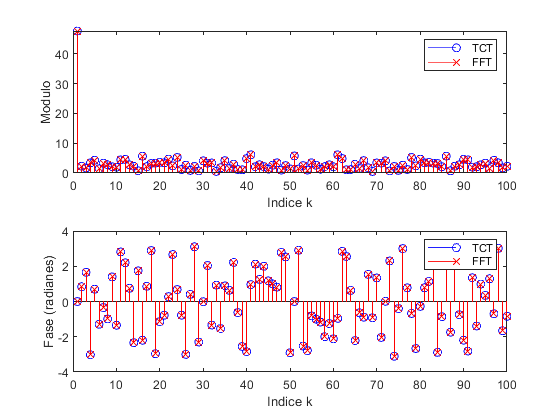
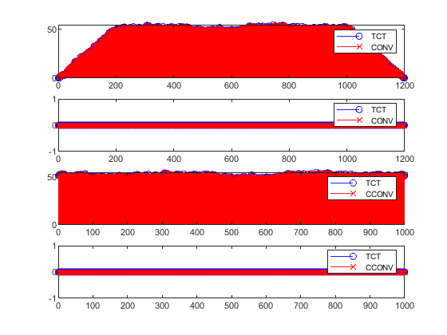
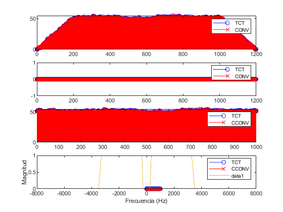
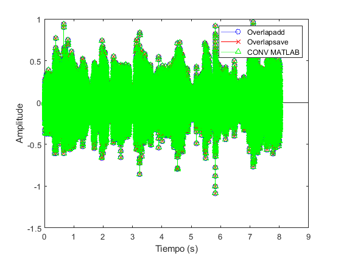

Contents
% +++++++++++++++++++++++++++++++++++++++++++++++++++++++++++++++++++++++++ % PRACTICA 2 TCT (PRIMERA PARTE) % +++++++++++++++++++++++++++++++++++++++++++++++++++++++++++++++++++++++++ %-------------------------------------------------------------------------- clc; clear all; close all; %-------------------------------------------------------------------------- % Señal aleatoria con distribucion uniforme N=100; % Numero de muestras x=rand(1,N); % Señal aleatoria Desde 1 hasta N % Calculo de la DFT,IDFT con las funciones implementadas [X_TCT,Xabs_TCT,Xang_TCT]=DFT_TCT(x); %DFT [x_TCT]=IDFT_TCT(X_TCT); %IDFT % Calculo de la DFT,IDFT con las funciones fft/ifft [X_FFT]=fft(x); %DFT [x_FFT]=ifft(X_FFT); %IDFT % Representacion de ambos pares de transformadas ( stem Gráficas de datos discretos ) subplot(211);stem(Xabs_TCT,'ob');hold on;stem(abs(X_FFT),'xr'); ylabel('Modulo');xlabel('Indice k');legend('TCT','FFT'); subplot(212);stem(Xang_TCT,'ob');hold on;stem(angle(X_FFT),'xr'); ylabel('Fase (radianes)');xlabel('Indice k');legend('TCT','FFT'); % Conclusion: % Se puede comprobar como la funciona DFT_TCT y IDFT_TCT que se han % implementado son correctas ya que los resultados son iguales a % los comandos fft y ifft de MATLAB
+++++++++++++++++++++++++++++++++++++++++++++++++++++++++++++++++++++++++
PRACTICA 2 TCT (SEGUNDA PARTE) +++++++++++++++++++++++++++++++++++++++++++++++++++++++++++++++++++++++++
% Señales sobre las que realizar la convolucion a=rand(1,1000); b=rand(1,200); % CONCOLUCION LINEAL (Longitud = La + Lb -1) cl_matlab=conv(a,b); % MATLAB cl_tct=CONVLIN_TCT(a,b); % CONVLIN_TCT % CONVOLUCION CIRCULAR(Longitud = max(La,Lb)) cc_matlab=cconv(a,b,max(length(a),length(b))); % MATLAB cc_tct=CONVCIR_TCT(a,b); % CONVCIR_TCT %Representaciones subplot(411);stem(abs(cl_tct),'ob');hold on;stem(abs(cl_matlab),'xr');legend('TCT','CONV'); subplot(412);stem(angle(cl_tct),'ob');hold on;stem(angle(cl_matlab),'xr');legend('TCT','CONV'); subplot(413);stem(abs(cc_tct),'ob');hold on;stem(abs(cc_matlab),'xr');legend('TCT','CCONV'); subplot(414);stem(angle(cc_tct),'ob');hold on;stem(angle(cc_matlab),'xr');legend('TCT','CCONV'); %-------------------------------------------------------------------------- % Conclusiones: %i)La longitud de los vectores cl_matlab y cl_tct de la convolucion lineal % debe ser igual a N=L+P-1. Deben coincidir ya que el comando conv de MATLAB % proporciona la convolucion lineal y el alumno debe implementar la convolucion % lineal mediante DFT, luego internamente se debe calcular una longitud N=L+P-1 para que % la convolucion circular (de la DFT) coincida con la convolucion lineal. %ii) La longitud de las vectores cc_matlab y cc_tct de la convolucion circular % debe ser igual al maximo numero de muestras teniendo en cuenta los dos % vectores de entrada. Deben coincidir ya que el comando cconv de MATLAB % proporciona la convolucion circular %iii) Se ha comprobado el correcto funcionamiento de la convolucion lineal % (CONVLIN_TCT) y circular (CONVCIR_TCT) implementada, ya que proporciona % los mismos valores que las funciones de MATLAB (conv y cconv). %--------------------------------------------------------------------------
+++++++++++++++++++++++++++++++++++++++++++++++++++++++++++++++++++++++++
PRACTICA 2 TCT (TERCERA PARTE) +++++++++++++++++++++++++++++++++++++++++++++++++++++++++++++++++++++++++
%-------------------------------------------------------------------------- % Señial de audio (Duracion: 8.02 sec) [x fs]=audioread('Scarecrow.wav'); %-------------------------------------------------------------------------- %-------------------------------------------------------------------------- % Cargar respuesta impulsiva h[n] del filtro paso banda (300-3500Hz) load('h.mat'); % Obtener la respuesta en frecuencia H[k] H=fftshift(fft(h,10*length(h))); ff=-fs/2:fs/(length(H)-1):fs/2; plot(ff,abs(H));xlabel('Frecuencia (Hz)');ylabel('Magnitud'); %-------------------------------------------------------------------------- %-------------------------------------------------------------------------- % CONVOLUCION POR BLOQUES (Metodo OVERLAP-ADD vs OVERLAP-SAVE) % Tamano de los bloques T=max(nextpow2(512),nextpow2(2*length(h))); L=2^T; % METODO OVERLAP-ADD utilizando CONVLIN_TCT t=clock; % Inicio contador de tiempo [y1]=OVERLAPADD_TCT(x,h,L); y1=y1(1:length(x)); Time_end=etime(clock,t); % Final contador de tiempo disp(['Entrada: ' num2str(length(x)/fs) ' sec. Tiempo de overlap-add: ' num2str(Time_end) ' sec.']); % METODO OVERLAP-SAVE utilizando CONVCIR_TCT t=clock; % Inicio contador de tiempo [y2]=OVERLAPSAVE_TCT(x,h,L); Time_end=etime(clock,t); % Final contador de tiempo disp(['Entrada: ' num2str(length(x)/fs) ' sec. Tiempo de overlap-save: ' num2str(Time_end) ' sec.']); % METODO FILTRADO MATLAB t=clock; % Inicio contador de tiempo c=conv(x,h); c=c(1:length(x)); Time_end=etime(clock,t); % Final contador de tiempo disp(['Entrada: ' num2str(length(x)/fs) ' sec. Tiempo de conv(MATLAB): ' num2str(Time_end) ' sec.']); % REPRESENTACIONES figure;stem((1:length(x))/fs,y1,'ob');hold on; % OVERLAP-ADD stem((1:length(x))/fs,y2,'xr');hold on; % OVERLAP-SAVE stem((1:length(x))/fs,c,'^g'); % MATLAB ylabel('Amplitude');xlabel('Tiempo (s)');legend('Overlapadd','Overlapsave','CONV MATLAB'); % GRABACION CON DIFERENTES METODOS audiowrite('Scarecrow_Overlapadd.wav',y1,fs); audiowrite('Scarecrow_Overlapsave.wav',y2,fs); audiowrite('Scarecrow_conv_MATLAB.wav',c,fs); % Conclusiones: % i) Se ha comprobado el correcto funcionamiento del metodo overlap-add y % overlap-save ya que proporciona los mismos valores que la funcion conv % de MATLAB al introducirle el vector de audio completo. % ii) Las diferencias entre entrada y salida es que la senal de salida esta % filtrada por el filtro paso banda, luego se han eliminado los sonidos % graves de baja frecuencias y todos los sonidos de alta frecuencia, % incluido el ruido por encima de los 4KHz aprox. % iii) EFICIENCIA COMPUTACIONAL: el metodo overlapsave es mas eficiente % computacionalmente que el metodo overlap-add ya que utiliza convoluciones % con menos puntos ya que las DFT son de L puntos (convoluciones circulares) % en lugar de N=L+P-1 puntos (convoluciones lineales) tal como lo utilizan % el metodo overlapadd. Es decir, overlapadd suma vectores de convoluciones % de tamano N mientras que overlap-save yuxtapone vectores de tamano L-(P-1) % muestras.
Entrada: 8.0225 sec. Tiempo de overlap-add: 270.372 sec. Entrada: 8.0225 sec. Tiempo de overlap-save: 226.895 sec. Entrada: 8.0225 sec. Tiempo de conv(MATLAB): 0.008 sec. Warning: Data clipped when writing file. Warning: Data clipped when writing file. Warning: Data clipped when writing file. 